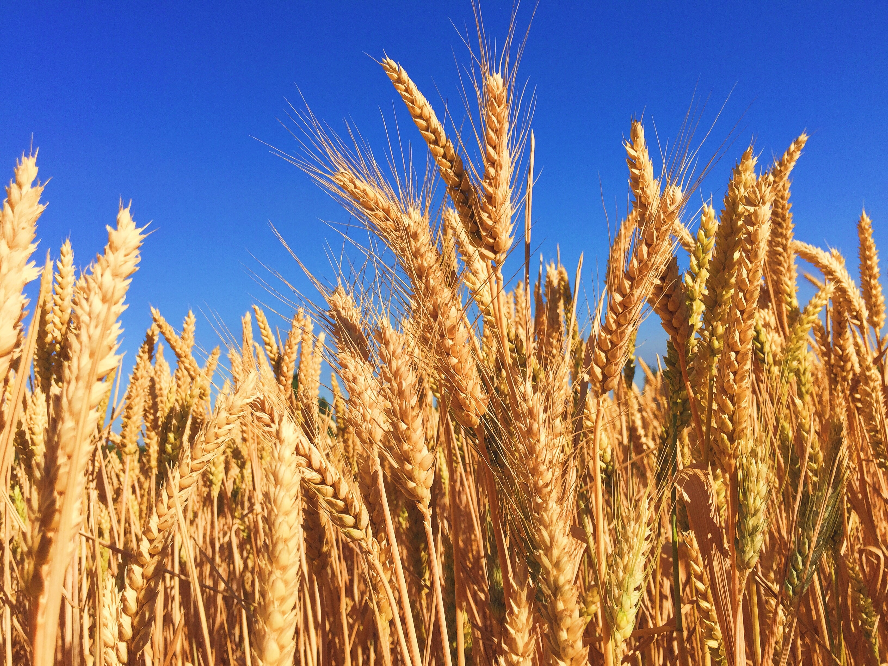

About Wheat
Wheat is a staple cereal grain and one of the most widely cultivated crops globally. It is a primary ingredient in many staple foods, such as bread, pasta, and cereal. Wheat comes in various varieties, including hard and soft, and is grown in diverse climates around the world.
Steps to Grow Wheat
- Choose a well-drained and fertile soil for wheat cultivation.
- Plant wheat seeds in the fall or early spring, depending on the climate.
- Ensure proper spacing between rows to allow for optimal growth.
- Water the wheat plants consistently, especially during critical growth stages.
- Apply nitrogen-based fertilizers to support wheat growth and yield.
- Protect the crop from pests and diseases through regular monitoring and treatment.
- Harvest wheat when the grains are fully developed and the plant has turned golden brown, typically in late spring or early summer.
Extra Information
Wheat is a crucial part of the human diet, providing a significant source of carbohydrates and essential nutrients. It has been a staple food for thousands of years and is a major component of many traditional cuisines. Wheat cultivation has played a pivotal role in the development of agriculture and civilization.